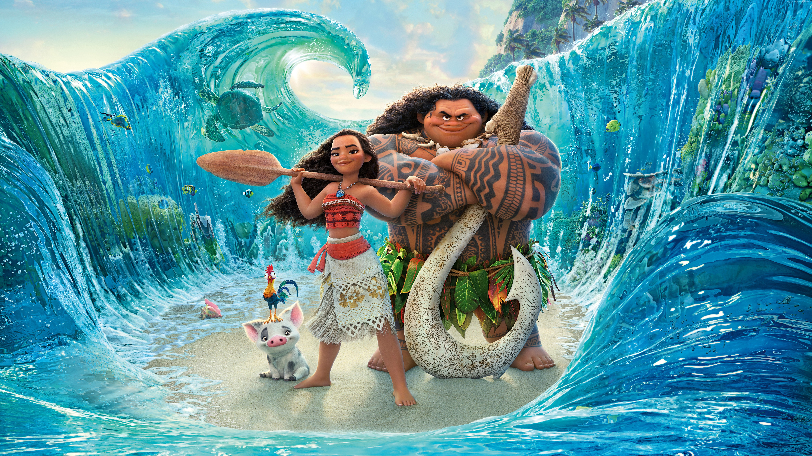

Una aventura llena de valentía, amistad y descubrimiento.
Moana es una joven que vive en una isla y siente una gran conexión con el mar.
Es valiente, decidida y está dispuesta a enfrentar nuevos desafíos para ayudar a su pueblo.

Moana emprende un viaje por el océano para devolver el corazón de Te Fiti y solucionar un problema que afecta a su isla.
La película muestra la importancia de confiar en uno mismo y no rendirse ante las dificultades.
También destaca el amor por la familia, la naturaleza y las propias raíces.